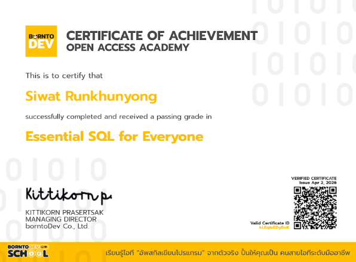
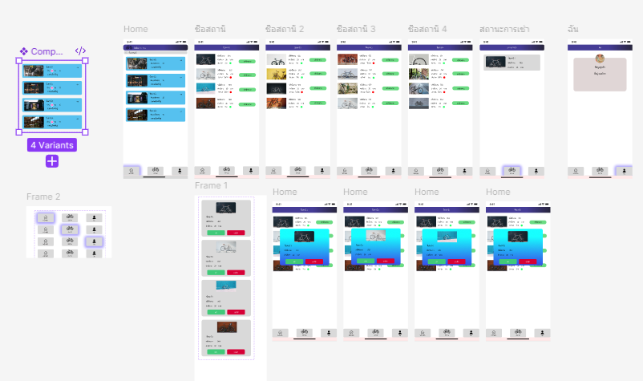
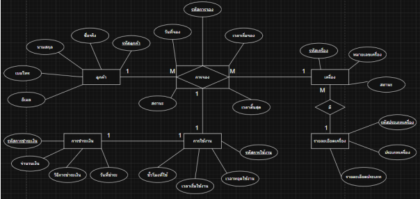

Workings

คำอธิบาย
--> หลักสูตรปูพื้นฐานการจัดการและบริหารข้อมูลด้วยภาษา SQL ตั้งแต่ระดับเริ่มต้นจนถึงขั้นประยุกต์ใช้งานจริง ได้เข้าใจพื้นฐานโครงสร้างระบบฐานข้อมูลเชิงสัมพันธ์ สามารถออกแบบและเขียนคำสั่ง SQL (Queries) เพื่อสืบค้น คัดกรอง จัดกลุ่ม และเชื่อมโยงข้อมูล (Table Joins) จากหลายแหล่งได้ รวมถึงมีความรู้ในการจัดการข้อมูลเบื้องต้น (CRUD Operations) ผ่านโปรแกรมจำลองฐานข้อมูลจริงเพื่อนำไปต่อยอดในงานพัฒนาซอฟต์แวร์และการวิเคราะห์ข้อมูล

คำอธิบาย
--> โปรเจกต์ออกแบบ Prototype โมบายแอปพลิเคชันสำหรับระบบเช่าจักรยานสาธารณะตามสถานี มีการทำ Component และเชื่อหน้าต่างๆให้เชื่อมต่อกัน ด้วย progarm Figma

คำอธิบาย
--> โปรเจกต์ออกแบบโครงสร้างฐานข้อมูลเชิงสัมพันธ์ (Relational Database) เพื่อรองรับระบบบริหารจัดการร้านอินเทอร์เน็ตคาเฟ่และการจองเครื่องคอมพิวเตอร์ล่วงหน้า โดยเน้นการจัดเก็บข้อมูลที่เป็นระเบียบ ปลอดภัย และลดความซ้ำซ้อนของข้อมูลตามหลัก Database Normalization ระบบสามารถติดตามสถานะการใช้งานของเครื่องคอมพิวเตอร์ บันทึกเวลาเข้าใช้จริงเพื่อคำนวณค่าบริการ และตรวจสอบประวัติการชำระเงินของลูกค้าได้ ด้วย ฐานข้อมูล MySQL